tabx - compose LaTeX tables using booktabs in Python¶

tabular + booktabs is all you need
tabxis a Python library for creating LaTeX tables using the booktabs packageFeatures include:
concatenate
Tables (and other table-related LaTeX objects) horizontally and vertically using overloaded|and/operatorsslice tables using numpy-like indexing e.g.
table[1:, 2:]no external dependencies
For a quick overview of functionality, see showcase
For a more in-depth tutorial, see tutorial
For some wisdom, see wisdom from bookstabs
For a list of examples, see examples
See also the documentation
Installation¶
uv pip install tabx-py
Showcase¶
from tabx import Cell, Table, Cmidrule, Midrule, multirow_column, multicolumn_row
C = Cell
base = Table.from_cells(
[
[C(3.14), C(3.14), C(3.14), C(3.14)],
[C(1.62), C(1.62), C(1.62), C(1.62)],
[C(1.41), C(1.41), C(1.41), C(1.41)],
[C(2.72), C(2.72), C(2.72), C(2.72)],
]
)
row_labels = Table.from_cells(
[
C(r"$\sigma = 0.1$"),
C(r"$\sigma = 0.3$"),
C(r"$\eta = 0.1$"),
C(r"$\eta = 0.3$"),
],
)
header = multicolumn_row(r"$\beta$", 2, pad_before=2) | multicolumn_row(r"$\gamma$", 2)
mr = multirow_column(r"$R_{1}$", 4)
cmrs = Cmidrule(3, 4, "lr") | Cmidrule(5, 6, "lr")
# Stack header on top of Cmidrules; stack row labels onto table from the left
tab = header / cmrs / (mr | row_labels | base)
tab.print() # Print table to stdout
\begin{tabular}{@{}cccccc@{}}
\toprule
& & \multicolumn{2}{c}{$\beta$} & \multicolumn{2}{c}{$\gamma$} \\
\cmidrule(lr){3-4}
\cmidrule(lr){5-6}
\multirow{4}{*}{$R_{1}$} & $\sigma = 0.1$ & 3.14 & 3.14 & 3.14 & 3.14 \\
& $\sigma = 0.3$ & 1.62 & 1.62 & 1.62 & 1.62 \\
& $\eta = 0.1$ & 1.41 & 1.41 & 1.41 & 1.41 \\
& $\eta = 0.3$ & 2.72 & 2.72 & 2.72 & 2.72 \\
\bottomrule
\end{tabular}
Compiling the table and converting to PNG yields:
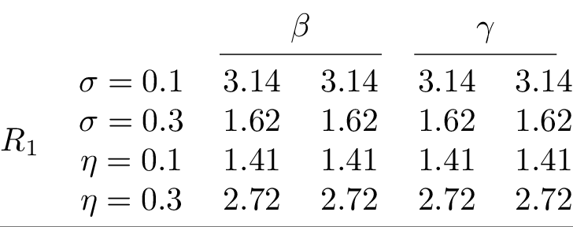
# Add some more complexity to the previous table
row_labels2 = Table.from_cells(
[
C(r"$\xi = 0.1$"),
C(r"$\xi = 0.3$"),
C(r"$\delta = 0.1$"),
C(r"$\delta = 0.3$"),
],
)
header2 = multicolumn_row(r"$\theta$", 2) | multicolumn_row(r"$\mu$", 2)
mr = multirow_column(r"$R_{2}$", 4)
tab2 = mr | row_labels2 | base
concat_tab = (
# Stack header with Cmidrule above all columns
(multicolumn_row("All models", 8, pad_before=2) / Cmidrule(3, 10))
/ (
# Stack tables vertically with Midrule in between
(tab / Midrule() / tab2)
# Stack the resulting table horizontally with the one below
| (
# Slice tables and stack new header on top
# Cmidrules start from 1 while no row labels for the right table
header2
/ (Cmidrule(1, 2, "lr") | Cmidrule(3, 4, "lr"))
/ tab[2:, 2:] # Previous table sliced
/ Midrule()
/ tab2[:, 2:] # New table sliced
)
)
).set_align(2 * "l" + 8 * "c")
concat_tab.print()
\begin{tabular}{@{}llcccccccc@{}}
\toprule
& & \multicolumn{8}{c}{All models} \\
\cmidrule(lr){3-10}
& & \multicolumn{2}{c}{$\beta$} & \multicolumn{2}{c}{$\gamma$} & \multicolumn{2}{c}{$\theta$} & \multicolumn{2}{c}{$\mu$} \\
\cmidrule(lr){3-4}
\cmidrule(lr){5-6}
\cmidrule(lr){7-8}
\cmidrule(lr){9-10}
\multirow{4}{*}{$R_{1}$} & $\sigma = 0.1$ & 3.14 & 3.14 & 3.14 & 3.14 & 3.14 & 3.14 & 3.14 & 3.14 \\
& $\sigma = 0.3$ & 1.62 & 1.62 & 1.62 & 1.62 & 1.62 & 1.62 & 1.62 & 1.62 \\
& $\eta = 0.1$ & 1.41 & 1.41 & 1.41 & 1.41 & 1.41 & 1.41 & 1.41 & 1.41 \\
& $\eta = 0.3$ & 2.72 & 2.72 & 2.72 & 2.72 & 2.72 & 2.72 & 2.72 & 2.72 \\
\midrule
\multirow{4}{*}{$R_{2}$} & $\xi = 0.1$ & 3.14 & 3.14 & 3.14 & 3.14 & 3.14 & 3.14 & 3.14 & 3.14 \\
& $\xi = 0.3$ & 1.62 & 1.62 & 1.62 & 1.62 & 1.62 & 1.62 & 1.62 & 1.62 \\
& $\delta = 0.1$ & 1.41 & 1.41 & 1.41 & 1.41 & 1.41 & 1.41 & 1.41 & 1.41 \\
& $\delta = 0.3$ & 2.72 & 2.72 & 2.72 & 2.72 & 2.72 & 2.72 & 2.72 & 2.72 \\
\bottomrule
\end{tabular}
Compiling the table and converting to PNG yields:
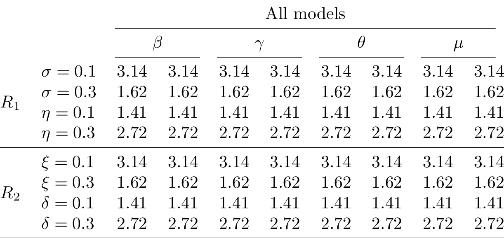
Tutorial¶
Cell, Table, and concatenation¶
from tabx import Cell
from tabx import utils
The most basic object is a Cell
cell = Cell("1")
cell
Cell(value="1", multirow=1, multicolumn=1)
Rendering a cell returns it values as a str
cell.render()
'1'
cell = Cell(r"$\alpha$")
cell.render()
'$\\alpha$'
Cells can be concatenated with other cells. Concatenating three cells
horizontally with the | operator yields a Table object of dimension
(1, 3)
tab = Cell("1") | Cell("2") | Cell("3")
tab
Table(nrows=1, ncols=3)
Rendering this yields a str with the three cells concatenated wrapped
inside a tabular environment ready to be used in a LaTeX document.
tab.render()
'\\begin{tabular}{@{}ccc@{}}\n \\toprule\n 1 & 2 & 3 \\\\\n \\bottomrule\n\\end{tabular}'
Can also be done vertically with the / operator yielding a Table
object of dimension (3, 1)
tab_other = Cell("1") / Cell("2") / Cell("3")
tab_other
Table(nrows=3, ncols=1)
We can concatenate a Table horizontally to stack the tables above each
other. This is done using the / operator.
stacked_tab = tab / tab
stacked_tab
Table(nrows=2, ncols=3)
And we can concatenate another table onto it from below and then the other from the right
stacked_tab2 = (stacked_tab / tab) | tab_other
stacked_tab2
Table(nrows=3, ncols=4)
To print out how the table looks like, we can use the print method;
this does not return anything but prints out the object to the console.
stacked_tab2.print()
\begin{tabular}{@{}cccc@{}}
\toprule
1 & 2 & 3 & 1 \\
1 & 2 & 3 & 2 \\
1 & 2 & 3 & 3 \\
\bottomrule
\end{tabular}
Say we want some columns name onto this table. This can be done:
stacked_tab3 = (Cell("A") | Cell("B") | Cell("C") | Cell("D")) / stacked_tab2
stacked_tab3.print()
\begin{tabular}{@{}cccc@{}}
\toprule
A & B & C & D \\
1 & 2 & 3 & 1 \\
1 & 2 & 3 & 2 \\
1 & 2 & 3 & 3 \\
\bottomrule
\end{tabular}
Maybe we want a Midrule underneath the column names. This can be done
as:
from tabx import Midrule
stacked_tab3 = (
(Cell("A") | Cell("B") | Cell("C") | Cell("D")) / Midrule() / stacked_tab2
)
stacked_tab3.print()
\begin{tabular}{@{}cccc@{}}
\toprule
A & B & C & D \\
\midrule
1 & 2 & 3 & 1 \\
1 & 2 & 3 & 2 \\
1 & 2 & 3 & 3 \\
\bottomrule
\end{tabular}
Let add some variable names on the left side. We can construct a column as:
row_labels = (
# The header row and Midrule row shouldn't get a label hence empty cells
Cell("") / Cell("") / Cell("Var1") / Cell("Var2") / Cell("Var3")
)
stacked_tab3 = row_labels | stacked_tab3
stacked_tab3.print()
\begin{tabular}{@{}ccccc@{}}
\toprule
& A & B & C & D \\
\midrule
Var1 & 1 & 2 & 3 & 1 \\
Var2 & 1 & 2 & 3 & 2 \\
Var3 & 1 & 2 & 3 & 3 \\
\bottomrule
\end{tabular}
If you have a LaTeX compiler in your path, you can compile the table to
a PDF and convert it to a PNG using tabx.utils.compile_table and
tabx.utils.pdf_to_png respectively.
file = utils.compile_table(
stacked_tab2.render(),
silent=True,
name="tutorial",
output_dir=utils.proj_folder().joinpath("figs"),
)
_ = utils.pdf_to_png(file)
Compiling the table to PDF and converting it to PNG yields:
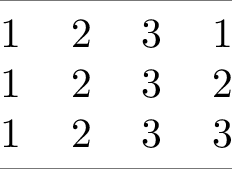
Slicing tables¶
Tables can be sliced like numpy arrays.
# Slice out the row label column
sliced_tab = stacked_tab3[:, 1:]
sliced_tab
Table(nrows=5, ncols=4)
sliced_tab.print()
\begin{tabular}{@{}cccc@{}}
\toprule
A & B & C & D \\
\midrule
1 & 2 & 3 & 1 \\
1 & 2 & 3 & 2 \\
1 & 2 & 3 & 3 \\
\bottomrule
\end{tabular}
Lets concatenate the sliced table to the original table, add a header
above the columns of each concatenated table and two Cmidrules between
to distinguish the two tables.
from tabx import Cmidrule
tab = (
# Add a header row; one empty cell for the row label column
(Cell("") | Cell("Table 1", multicolumn=4) | Cell("Table 2", multicolumn=4))
# Insert Cmidrules after columns
/ (Cmidrule(2, 5, trim="lr") | Cmidrule(6, 9, trim="lr"))
# Stack header row and Cmidrules above the concatenated tables
/ (stacked_tab3 | sliced_tab)
# Left align the first column and center the rest
.set_align("l" + "c" * 8)
)
tab.print()
file = utils.compile_table(
tab.render(),
silent=True,
name="tutorial2",
output_dir=utils.proj_folder().joinpath("figs"),
)
_ = utils.pdf_to_png(file)
\begin{tabular}{@{}ccccccccc@{}}
\toprule
& \multicolumn{4}{c}{Table 1} & \multicolumn{4}{c}{Table 2} \\
\cmidrule(lr){2-5}
\cmidrule(lr){6-9}
& A & B & C & D & A & B & C & D \\
\midrule
Var1 & 1 & 2 & 3 & 1 & 1 & 2 & 3 & 1 \\
Var2 & 1 & 2 & 3 & 2 & 1 & 2 & 3 & 2 \\
Var3 & 1 & 2 & 3 & 3 & 1 & 2 & 3 & 3 \\
\bottomrule
\end{tabular}
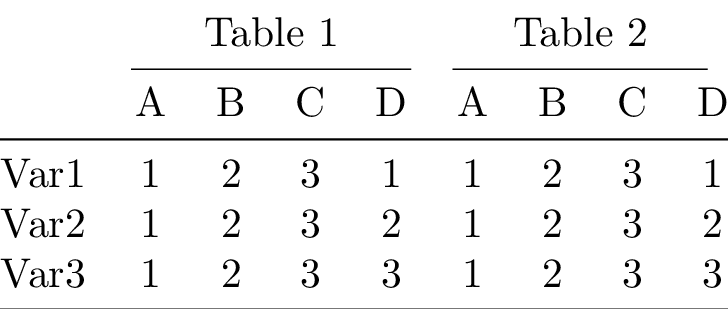
Okay let’s have some fun. We’ll slice out the upper part of the previous table, concatenate the sliced table onto it from below and then concatenate a column of multirow labels on the left. Let’s see it in action instead of the just read word salad:
from tabx import empty_table
multirow_labels = (
empty_table(3, 1)
/ Midrule()
# A multirow label spanning 3 rows should be followed by 2 empty cells
/ (Cell("Label 1", multirow=3) / empty_table(2, 1))
/ Midrule()
/ (Cell("Label 2", multirow=3) / empty_table(2, 1))
)
tab_new = multirow_labels | (tab / tab[3:, :])
tab_new.print()
file = utils.compile_table(
tab_new.render(),
silent=True,
name="tutorial3",
output_dir=utils.proj_folder().joinpath("figs"),
)
_ = utils.pdf_to_png(file)
\begin{tabular}{@{}cccccccccc@{}}
\toprule
& & \multicolumn{4}{c}{Table 1} & \multicolumn{4}{c}{Table 2} \\
\cmidrule(lr){3-6}
\cmidrule(lr){7-10}
& & A & B & C & D & A & B & C & D \\
\midrule
\multirow{3}{*}{Label 1} & Var1 & 1 & 2 & 3 & 1 & 1 & 2 & 3 & 1 \\
& Var2 & 1 & 2 & 3 & 2 & 1 & 2 & 3 & 2 \\
& Var3 & 1 & 2 & 3 & 3 & 1 & 2 & 3 & 3 \\
\midrule
\multirow{3}{*}{Label 2} & Var1 & 1 & 2 & 3 & 1 & 1 & 2 & 3 & 1 \\
& Var2 & 1 & 2 & 3 & 2 & 1 & 2 & 3 & 2 \\
& Var3 & 1 & 2 & 3 & 3 & 1 & 2 & 3 & 3 \\
\bottomrule
\end{tabular}
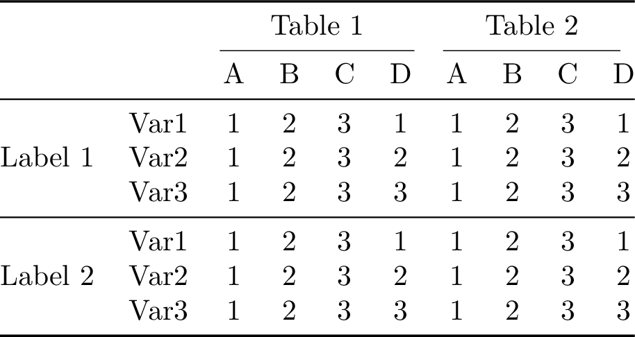
from tabx import Table
# Renders the table body without the tabular environment
print(tab_new.render_body())
& & \multicolumn{4}{c}{Table 1} & \multicolumn{4}{c}{Table 2} \\
\cmidrule(lr){3-6}
\cmidrule(lr){7-10}
& & A & B & C & D & A & B & C & D \\
\midrule
\multirow{3}{*}{Label 1} & Var1 & 1 & 2 & 3 & 1 & 1 & 2 & 3 & 1 \\
& Var2 & 1 & 2 & 3 & 2 & 1 & 2 & 3 & 2 \\
& Var3 & 1 & 2 & 3 & 3 & 1 & 2 & 3 & 3 \\
\midrule
\multirow{3}{*}{Label 2} & Var1 & 1 & 2 & 3 & 1 & 1 & 2 & 3 & 1 \\
& Var2 & 1 & 2 & 3 & 2 & 1 & 2 & 3 & 2 \\
& Var3 & 1 & 2 & 3 & 3 & 1 & 2 & 3 & 3 \\
Custom render function¶
A custom rendering function can be used to render the body of a table.
def render_body_simple(table: Table):
if not (align := table.align):
align = "c" * table.ncols
return "\n".join(
[
r"\begin{tabular}{" + align + r"}",
table.render_body(),
r"\end{tabular}",
]
)
print(tab_new.render(custom_render=render_body_simple))
\begin{tabular}{cccccccccc}
& & \multicolumn{4}{c}{Table 1} & \multicolumn{4}{c}{Table 2} \\
\cmidrule(lr){3-6}
\cmidrule(lr){7-10}
& & A & B & C & D & A & B & C & D \\
\midrule
\multirow{3}{*}{Label 1} & Var1 & 1 & 2 & 3 & 1 & 1 & 2 & 3 & 1 \\
& Var2 & 1 & 2 & 3 & 2 & 1 & 2 & 3 & 2 \\
& Var3 & 1 & 2 & 3 & 3 & 1 & 2 & 3 & 3 \\
\midrule
\multirow{3}{*}{Label 2} & Var1 & 1 & 2 & 3 & 1 & 1 & 2 & 3 & 1 \\
& Var2 & 1 & 2 & 3 & 2 & 1 & 2 & 3 & 2 \\
& Var3 & 1 & 2 & 3 & 3 & 1 & 2 & 3 & 3 \\
\end{tabular}
Utility functions¶
The function empty_table is convienient for creating empty cells of
dimension (nrows, ncols) as fillers.
n, m = 3, 5
empty_table(n, m)
Table(nrows=3, ncols=5)
The notation for the multirow cells above is a bit verbose. The function
multirow_column is a wrapper for creating a multirow column with
padding before and after the multirow cell.
from tabx import multirow_column
mr = multirow_column("Label1", multirow=3, pad_before=2, pad_after=2)
print(mr)
Columns(nrows=7, ncols=1)
mr.print()
\\
\\
\multirow{3}{*}{Label1} \\
\\
\\
\\
\\
We can write the multirow_labels column from before as:
multirow_labels_succ = (
# A multirow label spanning 3 rows should be followed by 2 empty cells
empty_table(3, 1)
/ Midrule()
/ multirow_column("Label 1", multirow=3)
/ Midrule()
/ multirow_column("Label 2", multirow=3)
)
print(multirow_labels_succ.rows == multirow_labels.rows)
True
Wisdom from bookstabs¶
You will not go far wrong if you remember two simple guidelines at all times:
Never, ever use vertical rules.
Never use double rules.
See Section 2 here for more wisdom.
Examples¶
Models estimates and standard errors¶
Model results dictionary passing¶
import tabx
from tabx import ColMap, utils
m1 = {
"variable": ["v1", "v2", "v3", "v4", "v5"],
"estimates": [1, 2, 3, 4, 5],
"se": [0.1, 0.2, 0.3, 0.4, 0.5],
"extra_data": {
r"$n$": 10,
"FE": r"\checkmark",
},
}
m2 = {
"variable": ["e1", "e2", "e3", "e4", "e5"],
"estimates": [1, 2, -3.34, 4, 5],
"se": [0.1, 0.2, 0.3, 0.4, 0.5],
"extra_data": {
r"$n$": 10,
"$t$-stat": 2.3,
"FE": "-",
},
}
m3 = {
"variable": ["v1", "e2", "e3", r"$\gamma$"],
"estimates": [10, 20, 4, 5],
"se": [0.1, 0.2, 0.3, "0.0400"],
"extra_data": {
"FE": r"\checkmark",
},
}
m4 = {
"variable": ["v1", "e2", "e3", r"$\gamma$"],
"estimates": [10, 20, 4, 5],
"se": [0.1, 0.2, 0.3, "0.0400"],
}
mod1 = tabx.ModelData.from_dict(m1, name="(M1)")
mod2 = tabx.ModelData.from_dict(m2, name="(M2)")
mod3 = tabx.ModelData.from_dict(m3, name="(M3)")
mod4 = tabx.ModelData.from_dict(m4, name="(M4)")
models = [mod1, mod2, mod3, mod4]
variables = (
["v1", "v2", "v3", "v4", "v5"] + ["e1", "e2", "e3", "e4", "e5"] + [r"$\gamma$"]
)
order_map = dict(zip(variables, range(len(variables)))) | {
"session": 0,
r"$n$": 1,
"$t$-stat": 2,
}
tab = tabx.models_table(
models,
col_maps=ColMap(
mapping={
(1, 2): r"\texttt{Outcome1}",
(3, 4): r"\texttt{Outcome2}",
}
),
var_name="",
order_map=order_map,
fill_value="-",
)
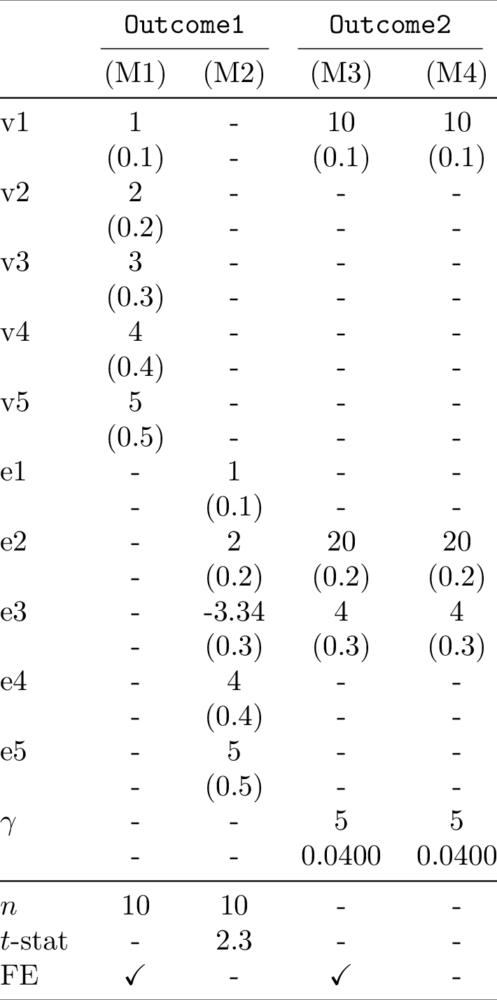
Model results from values¶
Create model table quickly from a polars.DataFrame using tabx. We
assume the columns are stacked as pairs of estimates and standard errors
for each model.
import polars as pl
import tabx
from tabx import ModelData, utils
data = pl.DataFrame(
[
["$x_1$", -0.44, 1.14, 1.04, 1.12, 0.56, 0.98, -0.25, -0.21],
["$x_2$", 0.58, -0.63, -0.92, 0.74, 0.45, -0.67, 0.33, 0.12],
["$x_3$", 0.64, -1.0, 1.15, 0.78, 0.34, -0.89, 0.22, 0.44],
["$x_4$", -0.43, 1.02, 1.76, -0.68, 0.22, 0.45, 0.11, -0.33],
["$x_5$", 0.1, 0.63, -0.35, -0.21, 0.15, 0.33, -0.12, 0.44],
["$x_6$", 0.06, 0.98, 0.56, -0.25, 0.12, 0.44, 0.22, -0.11],
["$x_7$", -1.49, -1.8, 0.8, -0.23, 0.67, 0.55, 0.33, -0.44],
["$x_8$", -1.91, -1.42, -0.3, 0.25, 0.33, 0.22, 0.11, -0.55],
],
schema=[
"variable",
"ests1",
"ses1",
"ests2",
"ses2",
"ests3",
"ses3",
"ests4",
"ses4",
],
orient="row",
)
desc_datas = ModelData.from_values(
data.rows(),
model_names=["M1", "M2", "M3", "M4"], # Exclude 'variable' column
extras=[
{"n": 10, "misc": 1},
{"n": 20, "misc": 0},
{"n": 50, "optimizer": "sgd"},
{"n": 25, "optimizer": "sgd"},
],
)
tab = tabx.models_table(
desc_datas,
col_maps=tabx.ColMap(mapping={(1, 2): "OLS", (3, 4): "Logistic"}),
include_midrule=True,
fill_value="-",
var_name="",
order_map={"n": 0, "misc": 1, "optimizer": 2},
)
Compiling the table to PDF and converting it to PNG yields:
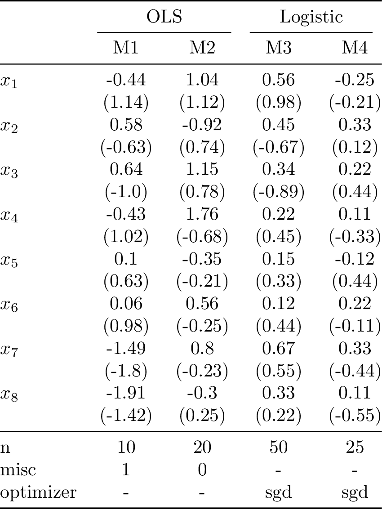
The downside of this approach is that the estimates and standard errors in each row are for the same variable. For the case with many models and many variables the dictionary passing approach is more flexible.
Descriptive statistics¶
Descriptive statistics dictionary passing¶
import tabx
from tabx import ColMap, RowMap, utils
m1 = {
"variable": ["v1", "v2", "v3", "v4", "v5"],
"values": [1.0, 2.0, 3, 4.0, 5],
"extra_data": {
r"$n$": 10,
"session": 1,
},
}
m2 = {
"variable": ["e1", "e2", "e3", "e4", "Something"],
"values": [1, 2, 3, 4, 5],
"extra_data": {
r"$n$": 10,
"tstat": 2.3,
"session": 2,
},
}
m3 = {
"variable": ["v1", "e2", "e3", r"$\gamma$"],
"values": [10, 20, 4, 5],
"se": [0.1, 0.2, 0.3, "0.0400"],
}
mod1 = tabx.DescData.from_dict(m1, name=r"\texttt{Outcome1}")
mod2 = tabx.DescData.from_dict(m2, name=r"\texttt{Outcome2}")
mod3 = tabx.DescData.from_dict(m3, name=r"\texttt{Outcome3}")
descs = [mod1, mod2, mod3, mod1, mod2, mod3]
variables = (
["Something", "v2", "v3", "v4", "v5"]
+ ["e1", "e2", "e3", "e4", "e5"]
+ [r"$\gamma$"]
)
order_map = dict(zip(variables, range(len(variables)))) | {
"session": 0,
r"$n$": 1,
"tstat": 2,
}
tab = tabx.descriptives_table(
descs,
col_maps=[
ColMap(
mapping={
(1, 6): r"Full experiment",
},
include_cmidrule=True,
),
ColMap(
mapping={
(1, 3): r"Col group 1",
(4, 6): r"Col group 2",
},
include_cmidrule=True,
),
],
order_map=order_map,
include_header=True,
include_extra=True,
row_maps=[
RowMap(
{
(1, 11): r"All",
}
),
RowMap(
{
(1, 6): r"Row group 1",
(7, 11): r"Row group 2",
}
),
],
fill_value="-",
)
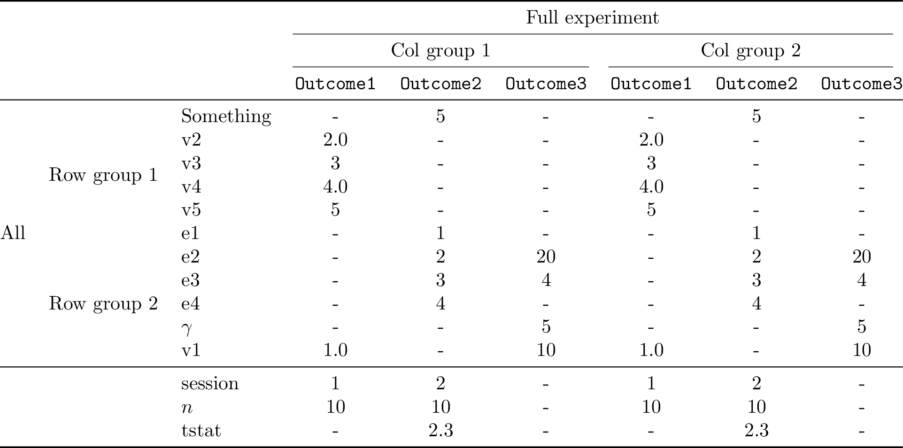
Descriptive statistics from values¶
Create descriptive table quickly from a polars.DataFrame using tabx.
import polars as pl
import tabx
from tabx import DescData, utils
data = pl.DataFrame(
[
["$x_1$", -0.44, 1.14, 1.04, 1.12],
["$x_2$", 0.58, -0.63, -0.92, 0.74],
["$x_3$", 0.64, -1.0, 1.15, 0.78],
["$x_4$", -0.43, 1.02, 1.76, -0.68],
["$x_5$", 0.1, 0.63, -0.35, -0.21],
["$x_6$", 0.06, 0.98, 0.56, -0.25],
["$x_7$", -1.49, -1.8, 0.8, -0.23],
["$x_8$", -1.91, -1.42, -0.3, 0.25],
],
schema=["variable", "A", "B", "C", "D"],
orient="row",
)
desc_datas = DescData.from_values(
data.rows(),
column_names=data.columns[1:], # Exclude 'variable' column
extras=[
{"n": 10, "misc": 1},
{"n": 20, "misc": 0},
{"n": 15, "misc": 1},
],
)
tab = tabx.descriptives_table(
desc_datas,
col_maps=tabx.ColMap(
mapping={
(1, 2): "First",
(3, 4): "Second",
}
),
include_midrule=True,
fill_value="-",
order_map={"n": 0, "misc": 1},
)
Compiling the table to PDF and converting it to PNG yields:
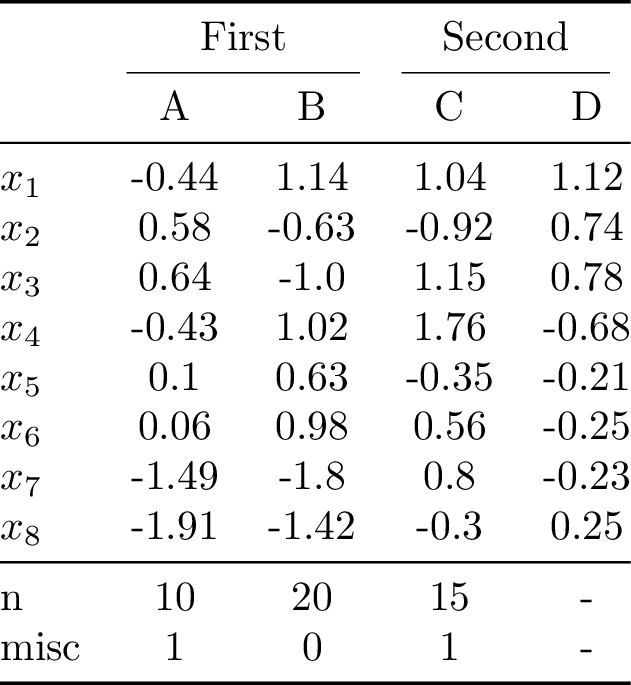
Scientific Table 1¶
Example from: here
import tabx
from tabx import DescData, utils, Cmidrule
column_names = ["{A}", "{B}", "{C}", "{D}", "{Avg}"]
values = [
["Density (g/mL)", 1.1, 1.04, 1.05, 1.109, 1.07],
["Mass (g)", 1.399, 1.32, 1.328, 1.408, 1.364],
["Mass w/ Precipitate (g)", 13.443, 13.401, 13.348, "{---}", 13.397],
["Mass AgCl (\\num{e-2} g)", 9.0, 9.2, 8.7, "{---}", 8.9],
["Moles AgCl (\\num{e-4} mol", 6.28, 6.42, 6.08, "{---}", 6.5],
]
desc_datas = DescData.from_values(values, column_names=column_names)
tab = (
tabx.descriptives_table(
desc_datas,
col_maps=tabx.ColMap(mapping={(1, 4): r"Test Tubes"}),
var_name="Qty of Sample",
include_midrule=False,
)
.insert_row(
Cmidrule(1, 1, "r") | Cmidrule(2, 5, "rl") | Cmidrule(6, 6, "l"),
index=3,
)
.set_align("l" + 5 * "S")
)
file = utils.compile_table(
tab.render(),
silent=True,
name="booktabs1",
output_dir=utils.proj_folder().joinpath("figs"),
)
_ = utils.pdf_to_png(file)
Compiling the table to PDF and converting it to PNG yields:
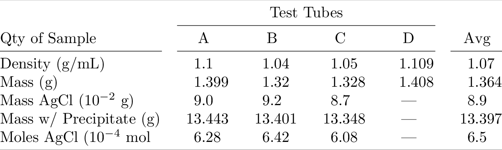
Scientific Table 2¶
Example from: here
import tabx
from tabx import DescData, utils
names = [
r"\texttt{trigmv}",
r"\texttt{trig\_expmv}",
r"\texttt{trig\_block}",
r"\texttt{expleja}",
]
desc_datas = [
DescData.from_dict(
{"variable": names, "values": [11034, 21952, 15883, 11180]},
name="$mv$",
),
DescData.from_dict(
{"variable": names, "values": [1.3e-7, 1.3e-7, 5.2e-8, 8.0e-9]},
name="Rel.~err",
),
DescData.from_dict(
{"variable": names, "values": [3.9, 6.2, 7.1, 4.3]},
name="Time",
),
DescData.from_dict(
{"variable": names, "values": [15846, 31516, 32023, 17348]},
name="$mv$",
),
DescData.from_dict(
{"variable": names, "values": [2.7e-11, 2.7e-11, 1.1e-11, 1.5e-11]},
name="Rel.~err",
),
DescData.from_dict(
{"variable": names, "values": [5.6, 8.8, 14.0, 6.6]},
name="Time",
),
]
tab = tabx.descriptives_table(
desc_datas,
col_maps=tabx.ColMap(
mapping={
(1, 3): r"$\text{tol}=u_{\text{single}}$",
(4, 6): r"$\text{tol}=u_{\text{double}}$",
}
),
var_name="",
include_midrule=True,
)
file = utils.compile_table(
tab.render(),
silent=True,
name="booktabs2",
output_dir=utils.proj_folder().joinpath("figs"),
)
_ = utils.pdf_to_png(file)
Compiling the table to PDF and converting it to PNG yields:
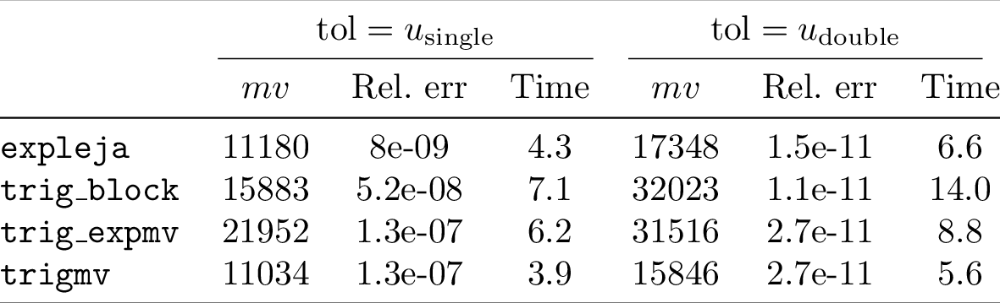
The above is a bit verbose. If you have the data as a list of lists, you
can use DescData.from_values to create the table as follows:
column_names = ["$mv$", "Rel.~err", "Time", "$mv$", "Rel.~err", "Time"]
values = [
["\\texttt{trigmv}", 11034, 1.3e-07, 3.9, 15846, 2.7e-11, 5.6],
["\\texttt{trig\\_expmv}", 21952, 1.3e-07, 6.2, 31516, 2.7e-11, 8.8],
["\\texttt{trig\\_block}", 15883, 5.2e-08, 7.1, 32023, 1.1e-11, 14.0],
["\\texttt{expleja}", 11180, 8e-09, 4.3, 17348, 1.5e-11, 6.6],
]
desc_datas = DescData.from_values(values, column_names=column_names)
tab_other = tabx.descriptives_table(
desc_datas,
col_maps=tabx.ColMap(
mapping={
(1, 3): r"$\text{tol}=u_{\text{single}}$",
(4, 6): r"$\text{tol}=u_{\text{double}}$",
}
),
var_name="",
include_midrule=True,
)
print(tab == tab_other)
True
Great Tables¶
Great Tables table
Construct a table from its components as shown in in Great Tables
"""
See: https://posit-dev.github.io/great-tables/articles/intro.html
"""
import tabx
from tabx import Table, table, Cmidrule, Midrule
from tabx import Cell as C
from tabx.table import multicolumn_row, multirow_column
from tabx.utils import compile_table, render_body_no_rules, pdf_to_png
vals = [[j for j in range(i, i + 3)] for i in range(1, 9 + 1, 3)]
colsums = [sum(col) for col in zip(*vals)]
table_body = Table.from_values(vals + [colsums])
stub = table.Column.from_values(
["Row label", "Row label", "Row label", "Summary label"]
)
stubhead_label = multirow_column(
"Stubhead label",
multirow=3,
vpos="c",
vmove="3pt",
)
col_labels1 = (
# spanner label
C("Spanner label", multicolumn=2)
/ Cmidrule(1, 2, trim="lr")
# column labels
/ (C(r"\shortstack{Column\\Label}") | C(r"\shortstack{Column\\Label}"))
)
col_labels2 = multirow_column(
r"\shortstack{Column\\Label}",
# "Column label",
multirow=3,
vpos="c",
vmove="3pt",
)
col_labels = col_labels1 | col_labels2
footnotes = multicolumn_row("footnotes", multicolumn=4, colspec="c")
sourcenotes = multicolumn_row("sourcenotes", multicolumn=4, colspec="c")
title = multicolumn_row("Some very long title", multicolumn=4, colspec="c")
subtitle = multicolumn_row("Some very long subtitle", multicolumn=4, colspec="c")
tab = (
(title / subtitle)
/ Midrule()
/ (stubhead_label | col_labels)
/ (C("Row group label") | [C("-"), C("-"), C("-")])
/ (stub | table_body)
/ Midrule()
/ (footnotes / sourcenotes)
).set_align("lccc")
Compiling the table to PDF and converting it to PNG yields:
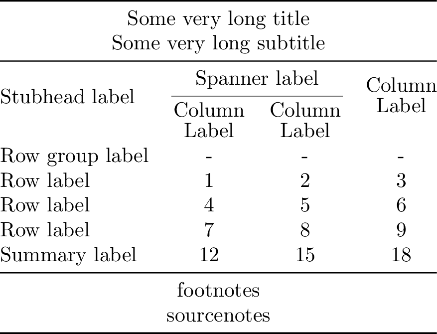
Annotated table
Annotate the table as shown in in Great Tables docs
# Remove midrules and annotate the table's components
# Midrules will span the annotations; hence we remove them
tab = (
(title / subtitle)
/ (stubhead_label | col_labels)
/ (C("Row group label") | [C("-"), C("-"), C("-")])
/ (stub | table_body)
/ (footnotes / sourcenotes)
).set_align("lccc")
annotations_left = (
multirow_column(r"\large \shortstack{TABLE\\HEADER}", 2, vpos="c")
/ multirow_column(r"\large \shortstack{STUB\\HEAD}", 3, vpos="c")
# add 1 for row group label
/ multirow_column(r"\large STUB", 4 + 1, vpos="c")
/ tabx.empty_columns(2, 1)
)
annotations_right = (
tabx.empty_columns(2, 1)
/ multirow_column(r"\large \shortstack{COLUMN\\LABELS}", 3, vpos="c")
/ multirow_column(r"\large \shortstack{TABLE\\BODY}", 4 + 1, vpos="c")
/ multirow_column(r"\large \shortstack{TABLE\\FOOTER}", 2, vpos="c")
)
annotations_top = multicolumn_row(
r"\LARGE The Components of a Table", multicolumn=6, colspec="c"
)
annotated_tab = (
annotations_top / Cmidrule(2, 5) / (annotations_left | tab | annotations_right)
)
Compiling the table to PDF and converting it to PNG yields:
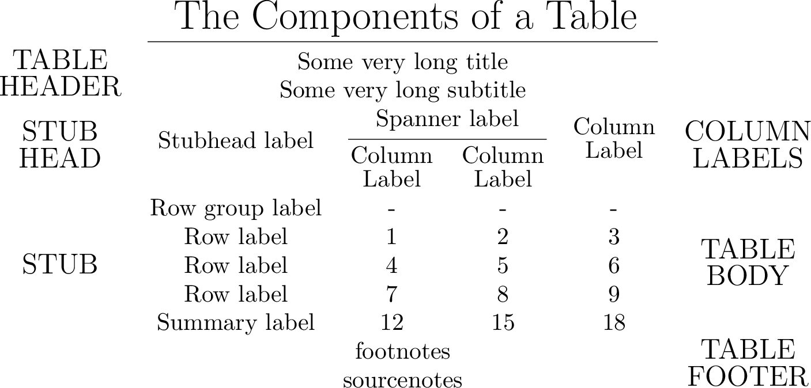
Colored output¶
import tabx
from tabx import utils
from tabx.utils import colored_column_spec, compile_table, pdf_to_png
from tabx import ColoredRow, ColoredCell
C = tabx.Cell
CC = ColoredCell
et = tabx.empty_table
CR = ColoredRow
tab = tabx.Table.from_cells(
[
[C("A"), CC("B", "yellow"), C("C")],
[C("A"), CC("B", "green"), C("C")],
[C("A"), CC("X", "orange"), C("C")],
[C("A"), C("B"), C("C")],
]
)
tab = C("X", multicolumn=3) / tabx.Cmidrule(1, 3) / tab
tab = (tab / tabx.empty_table(3, 3)).set_align(
colored_column_spec("blue", "c")
+ colored_column_spec("magenta", "c")
+ colored_column_spec("purple", "r")
)
subtab = tabx.Table.from_cells(
[
[
CC("H", "red"),
CC("E", "green"),
CC("L", "blue"),
CC("L", "orange"),
CC("O", "yellow"),
]
for _ in range(5)
]
)
subtab = et(2, 5) / subtab / et(2, 5)
tab = (
tab
| subtab
| tabx.multirow_column(
r"\rotatebox[origin=c]{270}{Greetings}",
7,
pad_before=2,
)
)
tab.print()
\begin{tabular}{@{}>{\columncolor{blue}}{c}>{\columncolor{magenta}}{c}>{\columncolor{purple}}{r}cccccc@{}}
\toprule
\multicolumn{3}{c}{X} & & & & & & \\
\cmidrule(lr){1-3}
A & \cellcolor{yellow}B & C & \cellcolor{red}H & \cellcolor{green}E & \cellcolor{blue}L & \cellcolor{orange}L & \cellcolor{yellow}O & \multirow{7}{*}{\rotatebox[origin=c]{270}{Greetings}} \\
A & \cellcolor{green}B & C & \cellcolor{red}H & \cellcolor{green}E & \cellcolor{blue}L & \cellcolor{orange}L & \cellcolor{yellow}O & \\
A & \cellcolor{orange}X & C & \cellcolor{red}H & \cellcolor{green}E & \cellcolor{blue}L & \cellcolor{orange}L & \cellcolor{yellow}O & \\
A & B & C & \cellcolor{red}H & \cellcolor{green}E & \cellcolor{blue}L & \cellcolor{orange}L & \cellcolor{yellow}O & \\
& & & \cellcolor{red}H & \cellcolor{green}E & \cellcolor{blue}L & \cellcolor{orange}L & \cellcolor{yellow}O & \\
& & & & & & & & \\
& & & & & & & & \\
\bottomrule
\end{tabular}
Compiling the table to PDF and converting it to PNG yields:
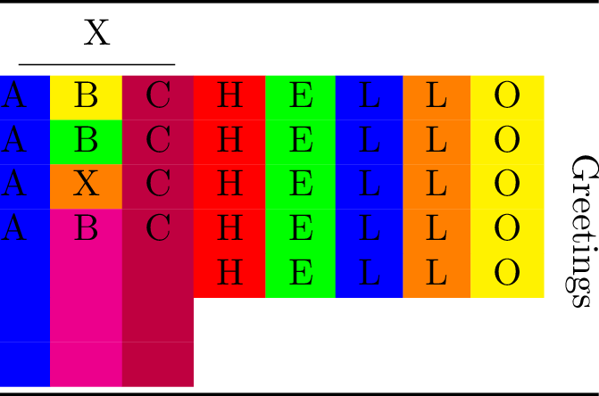
Misc¶
import tabx
from tabx import utils
from tabx.utils import compile_table, pdf_to_png
C = tabx.Cell
tab = tabx.Table.from_cells(
[
[C("A"), C("B"), C("C")],
[C("A"), C("B"), C("C")],
[C("A"), C("B"), C("C")],
[C("A"), C("B"), C("C")],
]
)
tab = C("X", multicolumn=3) / tabx.Cmidrule(1, 3) / tab
tab
Table(nrows=6, ncols=3)
tab.shape
(6, 3)
tab.shape
print(tab.render()) # Rendered table
\begin{tabular}{@{}ccc@{}}
\toprule
\multicolumn{3}{c}{X} \\
\cmidrule(lr){1-3}
A & B & C \\
A & B & C \\
A & B & C \\
A & B & C \\
\bottomrule
\end{tabular}
ce = tabx.empty_columns(6, 1)
ctab = ce | tab | ce
ctab.print()
\begin{tabular}{@{}ccccc@{}}
\toprule
& \multicolumn{3}{c}{X} & \\
\cmidrule(lr){2-4}
& A & B & C & \\
& A & B & C & \\
& A & B & C & \\
& A & B & C & \\
\bottomrule
\end{tabular}
Compiling the table to PDF and converting it to PNG yields:
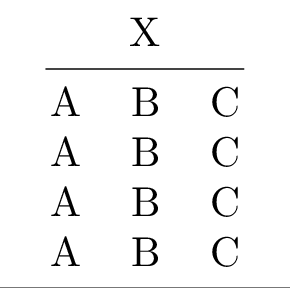
rlab = tabx.multirow_column(
r"\rotatebox[origin=c]{90}{$x = 2$}",
4,
pad_before=2,
align="l",
)
rlab2 = tabx.multirow_column(
r"\rotatebox[origin=c]{270}{$x = 2$}",
4,
pad_before=2,
align="l",
)
tt = (
(rlab | tab | rlab2)
/ tabx.Midrule()
/ C("Estimand", multicolumn=5, style="italic")
/ tabx.Cmidrule(2, 4)
/ C(r"$\beta$", multicolumn=5)
)
tt.print()
\begin{tabular}{@{}ccccc@{}}
\toprule
& \multicolumn{3}{c}{X} & \\
\cmidrule(lr){2-4}
\multirow{4}{*}{\rotatebox[origin=c]{90}{$x = 2$}} & A & B & C & \multirow{4}{*}{\rotatebox[origin=c]{270}{$x = 2$}} \\
& A & B & C & \\
& A & B & C & \\
& A & B & C & \\
\midrule
\multicolumn{5}{c}{\textit{Estimand}} \\
\cmidrule(lr){2-4}
\multicolumn{5}{c}{$\beta$} \\
\bottomrule
\end{tabular}
Compiling the table to PDF and converting it to PNG yields:
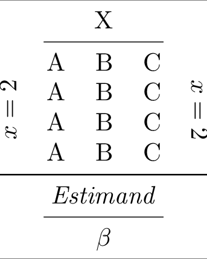
Ascii¶
"""
ASCII art tables.
"""
from functools import reduce
import pyfiglet
import tabx
from tabx import Cell, utils
from tabx.utils import render_body_simple
def get_lines(c: str):
return [c for c in c.splitlines() if c]
def parse_c(c: str):
if c == "_":
return r"\_"
if c == "|":
return r"\textbar"
if c == "\\":
return r"\textbackslash"
if c == "<":
return r"\textless"
if c == ">":
return r"\textgreater"
return c
def get_table(s: str):
parts = get_lines(s)
max_len = max([len(p) for p in parts])
rows = []
for p in parts:
row = []
lp = len(p)
diff = max_len - lp
for c in p:
row.append(Cell(value=parse_c(c), style="bold"))
for _ in range(diff): # pad differences
row.append(tabx.empty_cell())
rows.append(tabx.Row(row))
return tabx.Table(rows)
p1 = pyfiglet.figlet_format("t")
p2 = pyfiglet.figlet_format("a")
p3 = pyfiglet.figlet_format("b")
p4 = pyfiglet.figlet_format("x")
cols = [
get_table(p1),
get_table(p2),
get_table(p3),
get_table(p4),
]
ec = tabx.empty_columns
tab = get_table(p1) | get_table(p2) | get_table(p3) | get_table(p4)
file = utils.compile_table(
tab.render(),
silent=True,
output_dir=utils.proj_folder().joinpath("figs"),
name="ascii1",
)
_ = utils.pdf_to_png(file)
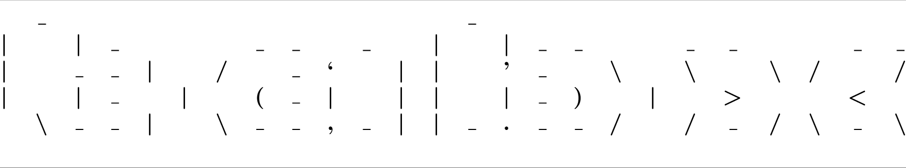
words = []
for word in ["LaTeX", "tables", "in", "Python"]:
word_cols = []
for c in word:
word_cols.append(get_table(pyfiglet.figlet_format(c)))
words.append(reduce(lambda x1, x2: x1 | x2, word_cols))
extra = (words[0] | ec(6, 1) | words[1]) / (
ec(6, 7) | words[2] | ec(6, 3) | words[3] | ec(6, 7)
)
top = ec(6, 21) | tab | ec(6, 21)
r = file = utils.compile_table(
(top / extra).render(render_body_simple),
silent=True,
output_dir=utils.proj_folder().joinpath("figs"),
name="ascii2",
)
_ = utils.pdf_to_png(file)
Development¶
git clone git@github.com:jsr-p/tabx.git
cd tabx
uv venv
uv sync --all-extras
Contributions¶
Contributions are welcome!
Misc.¶
Alternatives¶
The alternatives below are great but didn’t suit my needs fiddling with
multicolumn cells, multirow cells, cmidrules etc. and using the
tabular environment in LaTeX.
Why not tabularray?¶
The reason for using tabular + booktabs instead of tabularray is that tabularray is too slow when compiling. Also, tabular + booktabs is all you need.